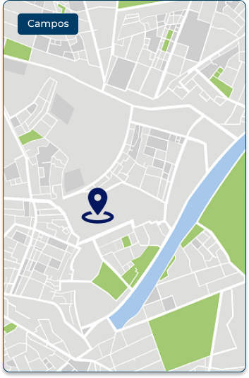

Mapa do Campus:
Prova
Graduação
Horário
Data
Prédio
Sala
Edital para Prova:
-A prova terá sua duração de 6h; -Poderá levar alimento sem rotulos; -Levar caneta transparente de cor azul ou preta somente; -Proibição de objetos eletrônicos em sala durante a prova, qualquer uso será retirado a prova e zerada; -O vestibulando terá sua libaração mais cedo somente as 15:00; -Terá 2 instrutores e 3 supervisores;